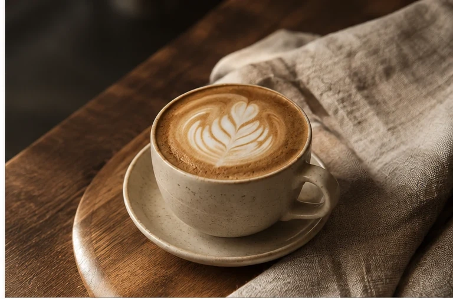
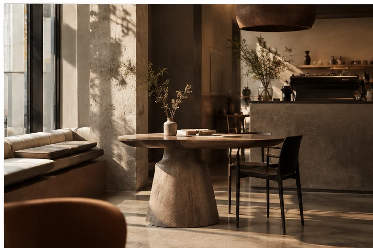

Независимая кофейня
Кофе,
который
остаётся.
Небольшое место для больших пауз. Сварили, подали, не стали ничего усложнять.
01Кофе / Холодное / Сладкое

Городская тишина07:30 — 21:30
ЭспрессоКапучиноКолд брюМатча-тоникКруассан+ ещё 16 позиций

Основано
на паузах
на паузах
О насМесто,
Место,
куда идут
не только за кофе.
«Кофеварька» — маленькая кофейня про ритм города без городской суеты. Мы любим ровный свет, хорошие зёрна, тёплую керамику и разговоры, которые начинаются с «давай ещё пять минут».
Здесь не нужно успевать всё. Можно выпить эспрессо стоя. Можно засесть у окна. Можно забрать синнабон домой, потому что он слишком хорош, чтобы делить его с кем-то.
02Метода
заваривания
заваривания
21Позиция
в карте
в карте
7/7Открыты
каждый день
каждый день
Маленький манифест
«Хороший кофе не требует
громкого голоса.»
⌖
placeholder address
München, DE
München, DE
◷
Ежедневно
07:30 — 21:30
07:30 — 21:30